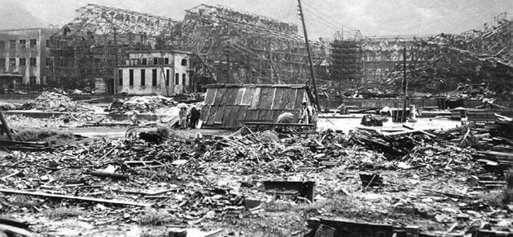
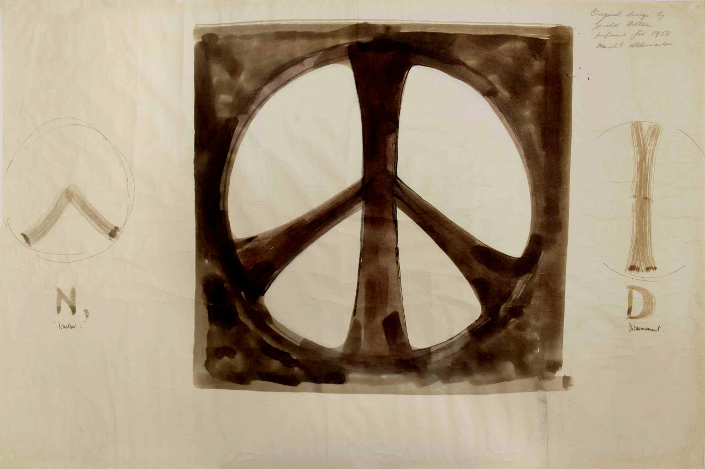

1945
6 août: les USA larguent une bombe sur Hiroshima. 140 000 personnes décédées en quelques mois.
9 août: les USA larguent une bombe sur Nagasaki. 74 000 personnes décédées des suites de la bombe et des radiations
1946
24 janvier: l’ONU demande l’élimination des armes nucléaires.
1949-1954
Les USA, l’Union Soviétique et les Royaumes Unis testent différentes armes nucléaires.
L’Union Soviétique devient la deuxième nation à développer et tester la bombe atomique avec succès.
1955
9 juillet: Bertrand Russell, Albert Einstein ainsi que d’autres scientifiques publient un manifeste sur les dangers d’une guerre nucléaire et appelant à régler les conflits pacifiquement.
1957
Réunion du petit groupe de militants Direct Action Committee lors des protestations contre les essais de bombes nucléaires britannique sur Christmas Island. Le groupe est influencé par les méthodes de résistances non-violentes de Gandhi.
1958
Le premier projet du Direction Action Committee est d’organisé une marche de Londres à l’établissement de recherche sur les armes nucléaires à Aldermaston en 1958. Gerald Holtom est alors un artiste basé à Twickenham et responsable de l’image de la marche. Il décide de créer un symbole qui signifie en même temps, le désarmement nucléaire et la nécessité pour chaque individu d’agir.
PEACE SIGN
Au début Gérald Holtom avait pensé se baser sur la croix chrétienne pour créer l’emblème de la campagne de désarmement nucléaire.
Par la suite, il a préféré utiliser
un principe de sémaphore
Il utilise donc le N(uclear) et le D(isarmament)  et place le tout dans un cercle symbolisant la Terre. Bien plus tard, Holtom explique que le design de l’emblème le représente lui-même, un humain désespéré avec les bras tendus vers le bas.
Holtom soumet son design en 1957, les organisateurs manquent de conviction par rapport au propos défendu par Holtom dans le symbole, le désarmement nucléaire est bien présent mais pas la nécessité d’action. Il est officiellement adopté par la Campagne de Désarmement Nucléaire en 1958.